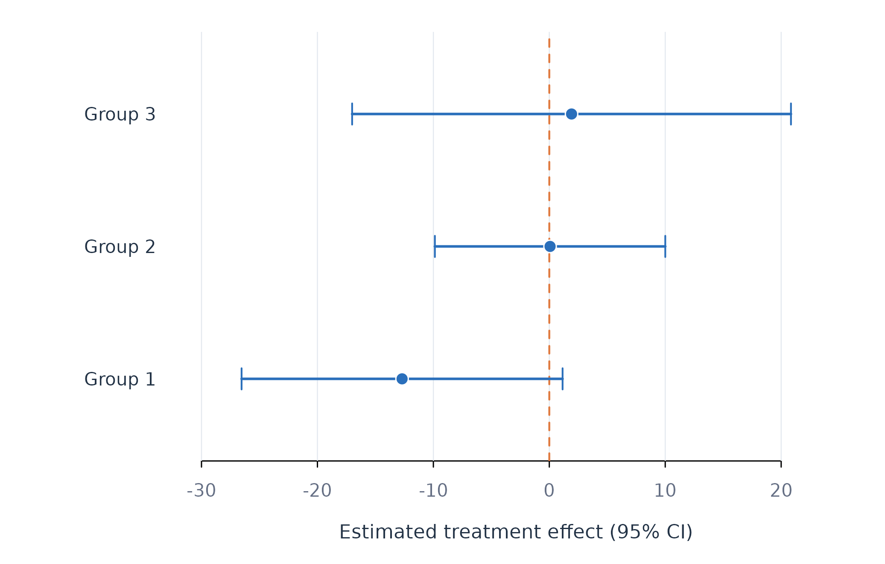

Analytic question
fit_effects() estimates average and heterogeneous
effects for binary, multi-arm, or continuous treatments. The function
takes an outcome, treatment, covariates, person identifier, optional
time order, and model controls. It returns an
idiographic_effects object with tidy effect estimates,
predictions, metrics, and failures.
fit_effects() uses augmented inverse-probability
weighting for binary and multi-arm treatments (Bang and Robins 2005). Outcome and
propensity models are estimated on training rows and applied to held-out
rows. Continuous treatments use a partially linear residualization score
(Chernozhukov et
al. 2018).
Define the illustrative contrast
fit_effects() treats days above the median monitoring
score as the exposed condition. The bundled data are observational and
contain no randomized treatment. The example therefore illustrates
estimation and diagnostics. It does not identify a causal effect of
monitoring.
fit_effects() adjusts for efficacy, planning, and
control at the pooled scope. Three sorted effect groups summarize
estimated heterogeneity.
effect_fit <- fit_effects(analysis_data, y = "effort", treatment = "high_monitoring", x = c("efficacy", "planning", "control"), id = "name", time = "day", scope = "pooled", n_groups = 3)
effects(effect_fit)
#> scope model estimator subject subgroup effect contrast n
#> 1 pooled linear native .all .all ATE 1 vs 0 564
#> 2 pooled linear native .all .all GATES:g1 1 vs 0 188
#> 3 pooled linear native .all .all GATES:g2 1 vs 0 188
#> 4 pooled linear native .all .all GATES:g3 1 vs 0 188
#> 5 pooled linear native .all .all GATES:top-bottom 1 vs 0 376
#> 6 pooled linear native .all .all BLP:heterogeneity 1 vs 0 564
#> n_people estimate std_error conf_low conf_high statistic p_value
#> 1 12 -3.57078063 4.959188 -14.4858795 7.344318 -0.72003335 0.48652270
#> 2 12 -12.69849520 6.290019 -26.5427337 1.145743 -2.01883257 0.06855353
#> 3 12 0.06728784 4.514504 -9.8690693 10.003645 0.01490481 0.98837502
#> 4 12 1.91886547 8.598972 -17.0073435 20.845074 0.22315058 0.82750812
#> 5 12 14.61736068 10.007818 -7.4096973 36.644419 1.46059423 0.17209304
#> 6 12 1.17193306 0.966670 -0.9556933 3.299559 1.21234037 0.25077815effects() reports an average contrast of about -3.7 in
Table 1. Its confidence interval includes zero. The top-minus-bottom
sorted-group contrast is about 15.1, and its interval also includes
zero. The BLP heterogeneity interval includes zero. This analysis does
not provide evidence of a stable effect difference across the sorted
groups.
Plot sorted effect groups
plot_effects() draws each GATES estimate with its
confidence interval. Figure 1 orders groups from the lowest to highest
predicted effect and marks zero with an orange reference line.
plot_effects(effect_fit, scope = "pooled")
Figure 1. Sorted high-monitoring contrasts and confidence intervals.
Figure 1 shows overlapping intervals across the three groups. The ordering was learned from the data, while the displayed group estimates use held-out scores. Wide intervals reflect uncertainty across 12 learners.
Identification assumptions and failure checks
fit_effects() requires consistency, positivity, and
conditional exchangeability for a causal interpretation. Positivity
requires both treatment conditions across relevant covariate patterns.
Conditional exchangeability requires that the supplied covariates block
treatment-outcome confounding. The observational teaching contrast
cannot verify that condition.
fit_effects() removes rows with a missing treatment
before it constructs the temporal split. Missing outcomes and predictors
are handled by the shared complete-case split. A person can still enter
the failure table when too few usable training or test rows remain.
fit_effects() trims estimated propensities away from
zero and one. Severe trimming indicates poor overlap and changes the
effective target population. AIPW tolerates misspecification of one
nuisance model under its regularity conditions. Misspecifying both
outcome and propensity models can bias the estimate.
When to use which
fit_effects() is appropriate when the target is an
average or person-varying treatment effect and the design supports
causal identification. fit_lm() is appropriate for
conditional association. fit_heterogeneity() is appropriate
for repeated-split inference about treatment effects, prediction error,
or the gain from individual modelling.